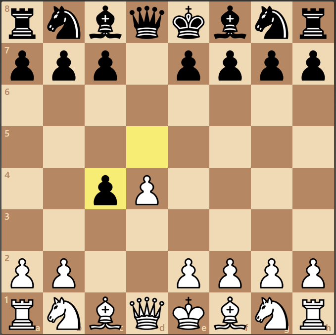
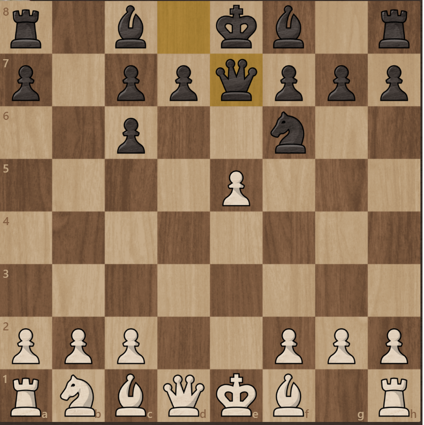

Queens Gambit Accepted
Queens Gambit Accepted to wersja Queens Gambit w której czarny bije piona na c4 i prowadzi do bardzo dynamicznej i ciekawej rozgrywki.
Jednak ponieważ daje niewielką przewagę białemu nie jest zbyt często grany na wyższym poziomie.
Gambit rozpoczyna się ruchami 1.e4 e5 2.c4 exc4

Po zagraniu tych ruchów Oficjalnie znajdujemy się w Queens Gambit Accepted.
Według komputera po tych ruchach najlepsza linia to: 3.Sf3 Sc6 4.Sxd4 Sf6 5. Sxc6 bxc6 6. e5 He7

O ile partia nie jest grana przez profesjonalnych szachistów rzadkim jest aby wszystkie ruchy były zgodne z ruchami komputera i odbiega od nich w pwnym momencie